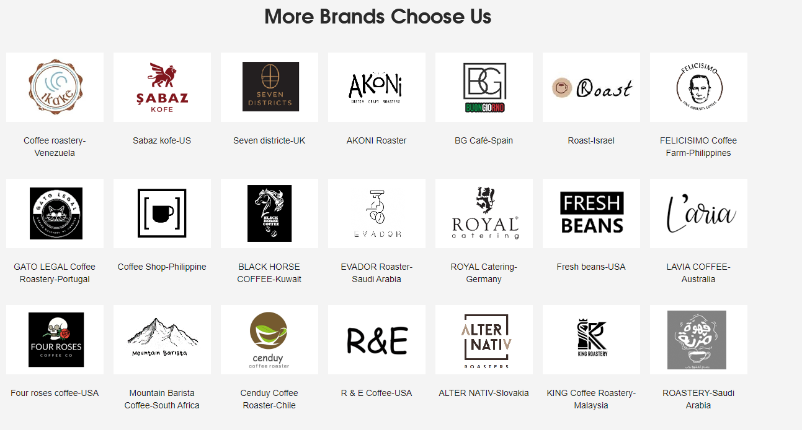
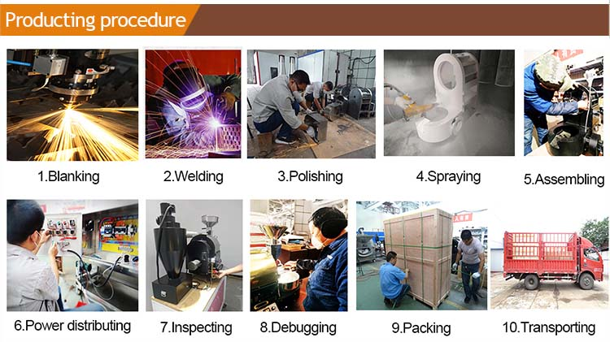
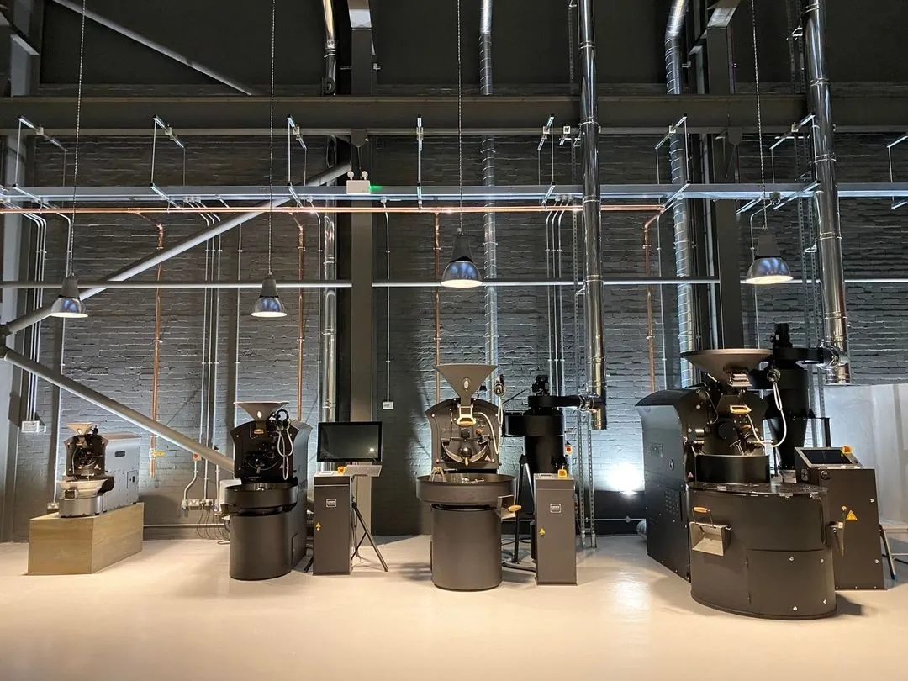
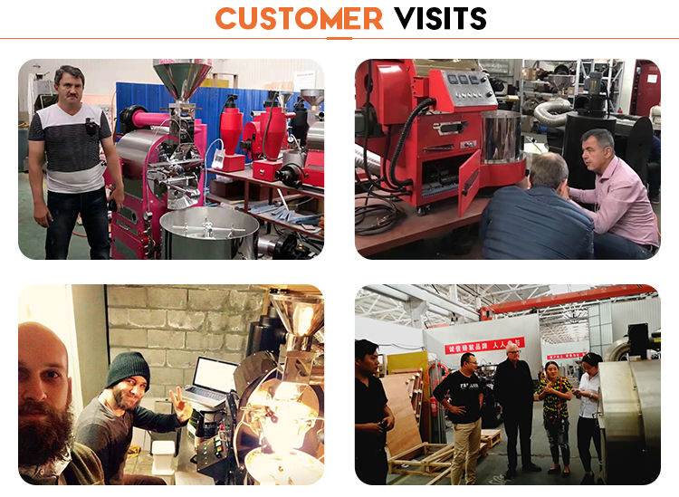

Where It's Made
Our Shenzhen Factory
Building B, Tongzhou Industrial Park, Guangming District, Shenzhen — where every Yoshan machine is designed, built, and QC-tested before shipping worldwide.






Since 1990, we've been building the machines that build the world's coffee culture — from a single roastery in Shenzhen to 60+ countries worldwide.
Yoshan is currently the only manufacturer in China that can keep pace with German technology. With a professional R&D team focused exclusively on quality, we have spent over 32 years perfecting the science and craft of coffee roasting equipment.
Today, Yoshan holds a unique distinction: the only factory in China capable of producing coffee roasters from 100g sample machines all the way to 300kg industrial lines — a complete spectrum no other Chinese manufacturer can match.
Our full-automatic lineup controls temperature variance to within ±0.1°C during the temperature-chasing process — a benchmark that rivals the finest German-engineered roasters.

Building B, Tongzhou Industrial Park, Guangming District, Shenzhen — where every Yoshan machine is designed, built, and QC-tested before shipping worldwide.



Every Yoshan machine passes a minimum of 3 factory QC inspections and is independently certified by leading international bodies.
Get a factory-direct quote in 2 hours. Tell us your capacity needs and we'll find the perfect machine.
Request a Free Quote →